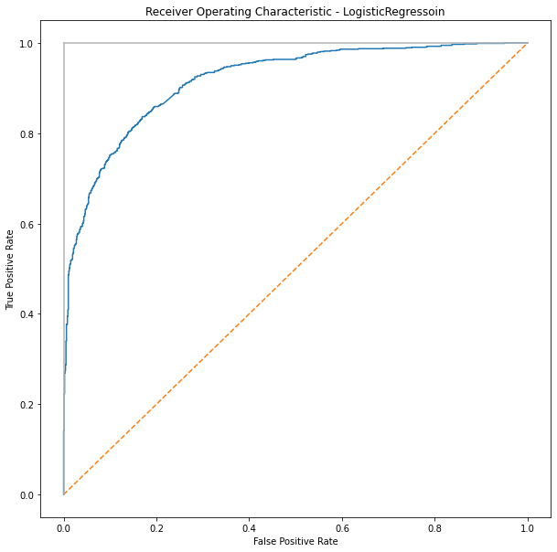
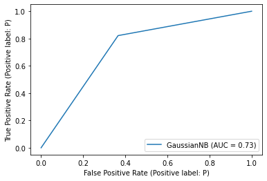
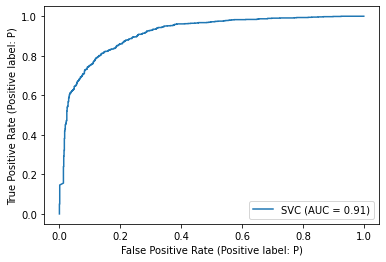
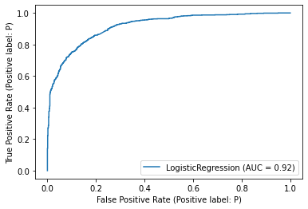

TM08 Classification
Contents
TM08 Classification#
Preparing data#
import pandas as pd
df = pd.read_csv('data/sentiment.csv')
import jieba
df['token_text'] = df['text'].apply(lambda x:list(jieba.cut(x)))
df.head(10)
Building prefix dict from the default dictionary ...
Loading model from cache /var/folders/j3/p4x0mssx55nd8dn903h5wdb00000gn/T/jieba.cache
Loading model cost 0.339 seconds.
Prefix dict has been built successfully.
| tag | text | token_text | |
|---|---|---|---|
| 0 | P | 店家很給力，快遞也是相當快，第三次光顧啦 | [店家, 很, 給力, ，, 快遞, 也, 是, 相當快, ，, 第三次, 光顧, 啦] |
| 1 | N | 這樣的配置用Vista系統還是有點卡。 指紋收集器。 沒送原裝滑鼠還需要自己買，不太好。 | [這樣, 的, 配置, 用, Vista, 系統, 還是, 有點, 卡, 。, , 指紋,... |
| 2 | P | 不錯，在同等檔次酒店中應該是值得推薦的！ | [不錯, ，, 在, 同等, 檔次, 酒店, 中應, 該, 是, 值得, 推薦, 的, ！] |
| 3 | N | 哎！ 不會是蒙牛乾的吧 嚴懲真凶！ | [哎, ！, , 不會, 是, 蒙牛, 乾, 的, 吧, , 嚴懲, 真凶, ！] |
| 4 | N | 空尤其是三立電視臺女主播做的序尤其無趣像是硬湊那麼多字 | [空, 尤其, 是, 三立, 電視, 臺, 女主播, 做, 的, 序, 尤其, 無趣, 像是... |
| 5 | N | 明明買了6本書，只到了3本，也沒有說是什麼原因，以後怎麼信的過？？？？？？？？？？？ | [明明, 買, 了, 6, 本書, ，, 只到, 了, 3, 本, ，, 也, 沒, 有, ... |
| 6 | P | 看了一下感覺還可以 | [看, 了, 一下, 感覺還, 可以] |
| 7 | P | 散熱還不錯，玩遊戲cpu溫度和硬碟溫度都在56以下， 速度很好，顯示卡也不錯 | [散熱, 還不錯, ，, 玩遊戲, cpu, 溫度, 和, 硬碟, 溫度, 都, 在, 56... |
| 8 | P | 外觀好看，白色的自己貼紙也方便，vista執行起來速度也還不錯.屬於主流配置了。一般用用可以的 | [外觀, 好看, ，, 白色, 的, 自己, 貼紙, 也, 方便, ，, vista, 執行... |
| 9 | N | 水超級小 用的時候還要先修理一下花灑 售後還說是水壓問題 說本來標配都是這樣還要自己重新換一個 | [水超級, 小, , 用, 的, 時候, 還要, 先, 修理, 一下, 花灑, , 售後... |
Removing Punctuation#
import unicodedata # for removing Chinese puctuation
def remove_punc_by_unicode(words):
out = []
for word in words:
if word != " " and not unicodedata.category(word[0]).startswith('P'):
out.append(word)
return out
df['cleaned'] = df['token_text'].apply(remove_punc_by_unicode)
# df['cleaned'] = df['clean'].apply(remove_stopWords)
df
| tag | text | token_text | cleaned | |
|---|---|---|---|---|
| 0 | P | 店家很給力，快遞也是相當快，第三次光顧啦 | [店家, 很, 給力, ，, 快遞, 也, 是, 相當快, ，, 第三次, 光顧, 啦] | [店家, 很, 給力, 快遞, 也, 是, 相當快, 第三次, 光顧, 啦] |
| 1 | N | 這樣的配置用Vista系統還是有點卡。 指紋收集器。 沒送原裝滑鼠還需要自己買，不太好。 | [這樣, 的, 配置, 用, Vista, 系統, 還是, 有點, 卡, 。, , 指紋,... | [這樣, 的, 配置, 用, Vista, 系統, 還是, 有點, 卡, 指紋, 收集器, ... |
| 2 | P | 不錯，在同等檔次酒店中應該是值得推薦的！ | [不錯, ，, 在, 同等, 檔次, 酒店, 中應, 該, 是, 值得, 推薦, 的, ！] | [不錯, 在, 同等, 檔次, 酒店, 中應, 該, 是, 值得, 推薦, 的] |
| 3 | N | 哎！ 不會是蒙牛乾的吧 嚴懲真凶！ | [哎, ！, , 不會, 是, 蒙牛, 乾, 的, 吧, , 嚴懲, 真凶, ！] | [哎, 不會, 是, 蒙牛, 乾, 的, 吧, 嚴懲, 真凶] |
| 4 | N | 空尤其是三立電視臺女主播做的序尤其無趣像是硬湊那麼多字 | [空, 尤其, 是, 三立, 電視, 臺, 女主播, 做, 的, 序, 尤其, 無趣, 像是... | [空, 尤其, 是, 三立, 電視, 臺, 女主播, 做, 的, 序, 尤其, 無趣, 像是... |
| ... | ... | ... | ... | ... |
| 6383 | P | 價效比高、記憶體大、功能全，螢幕超清晰 | [價效, 比高, 、, 記憶體, 大, 、, 功能, 全, ，, 螢幕超, 清晰] | [價效, 比高, 記憶體, 大, 功能, 全, 螢幕超, 清晰] |
| 6384 | N | 你太狠了… 告訴你他們不會喧譁的人，肯定是蒙牛喝多了 | [你, 太狠, 了, …, , 告訴, 你, 他們, 不會, 喧, 譁, 的, 人, ，,... | [你, 太狠, 了, 告訴, 你, 他們, 不會, 喧, 譁, 的, 人, 肯定, 是, 蒙... |
| 6385 | N | 醫生居然買了蒙牛，我是喝呢還是不喝呢還是不喝呢？ | [ , 醫生, 居然, 買, 了, 蒙牛, ，, 我, 是, 喝, 呢, 還是, 不, 喝,... | [醫生, 居然, 買, 了, 蒙牛, 我, 是, 喝, 呢, 還是, 不, 喝, 呢, 還是... |
| 6386 | N | 我只想說 夾蒙牛是不對的 販賣毒品是犯罪行為 | [我, 只, 想, 說, , 夾, 蒙牛, 是, 不, 對, 的, , 販賣, 毒品, ... | [我, 只, 想, 說, 夾, 蒙牛, 是, 不, 對, 的, 販賣, 毒品, 是, 犯罪,... |
| 6387 | P | 蒙牛便宜 | [蒙牛, 便宜] | [蒙牛, 便宜] |
6388 rows × 4 columns
Feature selection#
documents = [" ".join(doc) for doc in df['cleaned']]
documents[:10]
['店家 很 給力 快遞 也 是 相當快 第三次 光顧 啦',
'這樣 的 配置 用 Vista 系統 還是 有點 卡 指紋 收集器 沒送 原裝 滑鼠 還 需要 自己 買 不太好',
'不錯 在 同等 檔次 酒店 中應 該 是 值得 推薦 的',
'哎 不會 是 蒙牛 乾 的 吧 嚴懲 真凶',
'空 尤其 是 三立 電視 臺 女主播 做 的 序 尤其 無趣 像是 硬 湊 那麼 多字',
'明明 買 了 6 本書 只到 了 3 本 也 沒 有 說 是 什麼 原因 以後怎麼 信的過',
'看 了 一下 感覺還 可以',
'散熱 還不錯 玩遊戲 cpu 溫度 和 硬碟 溫度 都 在 56 以下 速度 很 好 顯示 卡 也 不錯',
'外觀 好看 白色 的 自己 貼紙 也 方便 vista 執行 起來 速度 也 還不錯 屬 於 主流 配置 了 一般 用 用 可以 的',
'水超級 小 用 的 時候 還要 先 修理 一下 花灑 售後還 說 是 水壓 問題 說 本來 標配 都 是 這樣 還要 自己 重新 換一個']
tfidf vectorization#
https://towardsdatascience.com/clustering-documents-with-python-97314ad6a78d
https://blog.csdn.net/blmoistawinde/article/details/80816179
Parameters
lowercasebool, default=True: Convert all characters to lowercase before tokenizing.
analyzer{‘word’, ‘char’, ‘char_wb’} or callable, default=’word’ Whether the feature should be made of word or character n-grams. Option ‘char_wb’ creates character n-grams only from text inside word boundaries; n-grams at the edges of words are padded with space.
stop_words{‘english’}, list, default=None
token_pattern, str, default=r”(?u)\b\w\w+\b”: the default setting limits on at least 2 characters
ngram_range, tuple (min_n, max_n), default=(1, 1): (1, 2) means unigrams and bigrams, and (2, 2) means only bigrams.
max_df(min_df) float or int, default=1.0: When building the vocabulary ignore terms that have a document frequency strictly higher(lower for min_df) than the given threshold (corpus-specific stop words). If float in range [0.0, 1.0], the parameter represents a proportion of documents, integer absolute counts. This parameter is ignored if vocabulary is not None.
max_features, int, default=None: If not None, build a vocabulary that only consider the top max_features ordered by term frequency across the corpus.
use_idf, default=True: Enable inverse-document-frequency reweighting.
smooth_idf, default=True: Smooth idf weights by adding one to document frequencies, as if an extra document was seen containing every term in the collection exactly once. Prevents zero divisions.
with open("data/stopwords_zh-tw.txt", encoding="utf-8") as fin:
stopwords = fin.read().split("\n")[1:]
from sklearn.feature_extraction.text import TfidfVectorizer
# fit(doc)
model_tfidf = TfidfVectorizer(max_df=0.05,
# token_pattern=r"(?u)\b\w+\b",
# max_features = 2000,
stop_words=stopwords).fit(documents)
# transform(doc) to document-term matrix
# X: Documnet-term matrix (rows, colomns)
X_tfidf = model_tfidf.transform(documents)
print(type(X_tfidf))
print(X_tfidf.shape)
# Show transform(X_tfidf) result
model_tfidf.inverse_transform(X_tfidf)[:20]
<class 'scipy.sparse.csr.csr_matrix'>
(6388, 11959)
[array(['給力', '第三次', '相當快', '快遞', '店家', '光顧'], dtype='<U24'),
array(['需要', '配置', '系統', '滑鼠', '沒送', '有點', '收集器', '指紋', '原裝', '不太好',
'vista'], dtype='<U24'),
array(['檔次', '推薦', '同等', '值得', '中應'], dtype='<U24'),
array(['真凶', '嚴懲'], dtype='<U24'),
array(['電視', '無趣', '尤其', '女主播', '多字', '像是', '三立'], dtype='<U24'),
array(['本書', '明明', '只到', '原因', '信的過', '以後怎麼'], dtype='<U24'),
array(['感覺還', '一下'], dtype='<U24'),
array(['顯示', '還不錯', '速度', '硬碟', '玩遊戲', '溫度', '散熱', '以下', 'cpu', '56'],
dtype='<U24'),
array(['配置', '還不錯', '速度', '貼紙', '白色', '方便', '好看', '外觀', '執行', '主流',
'vista'], dtype='<U24'),
array(['重新', '還要', '花灑', '水超級', '水壓', '標配', '本來', '換一個', '問題', '售後還',
'修理', '一下'], dtype='<U24'),
array(['還非', '結帳', '知道', '每首', '房間點', '懶得', '廢話', '太差'], dtype='<U24'),
array(['霸氣', '覺得', '特倫蘇', '牛奶', '外露'], dtype='<U24'),
array(['系統', '真難裝', '版本', '根本', '外觀', '剛買', 'xp', 'linux', 'ghost', '100'],
dtype='<U24'),
array(['配置', '用剛', '檔次', '有紅色', '很漂亮', '實惠', '女生', '外觀', '同價位'],
dtype='<U24'),
array(['棒子', '有樂趣', '我用', '大果', '喜歡', '吸馬桶', '吸著', '今天', '一個'],
dtype='<U24'),
array(['頭腦', '關注', '鑑別', '這本書會', '認真', '清醒', '毒人', '明白', '保持', '一直'],
dtype='<U24'),
array(['鍵盤', '輕便', '軟體', '視訊', '螢幕', '舒服', '自帶', '現實', '比不錯', '效果', '小巧',
'價效'], dtype='<U24'),
array(['系統', '硬碟', '正版', '收到', '原來', 'vista', 'dos', '320g', '250g'],
dtype='<U24'),
array(['這本書', '覺得', '看過', '巴豆', '嘟嘟'], dtype='<U24'),
array(['系統', '硬碟', '正版', '收到', '原來', 'vista', 'dos', '320g', '250g'],
dtype='<U24')]
doc2vec#
from gensim.test.utils import common_texts
from gensim.models.doc2vec import Doc2Vec, TaggedDocument
tagged_documents = [TaggedDocument(doc, [i]) for i, doc in enumerate(documents)]
model = Doc2Vec(tagged_documents, vector_size=100, window=2, min_count=1, workers=4)
import scipy
doc_vector = [model.infer_vector(doc) for doc in df['cleaned']]
X_w2v = scipy.sparse.csr_matrix(doc_vector)
X_w2v.shape
(6388, 100)
Chi.square feature selector#
from sklearn.feature_selection import chi2
from sklearn.feature_selection import SelectKBest
selector = SelectKBest(score_func=chi2, k=1000)
y = df.iloc[:, 0]
fit = selector.fit(X_tfidf, y)
fit.scores_
array([0.15789817, 0.01763186, 0.45339518, ..., 0.32014909, 0.00125132,
0.33394599])
X_chi2=selector.fit_transform(X_tfidf, y)
X_chi2
<6388x1000 sparse matrix of type '<class 'numpy.float64'>'
with 20500 stored elements in Compressed Sparse Row format>
train_test_split()#
https://scikit-learn.org/stable/modules/generated/sklearn.model_selection.train_test_split.html
Params
test_size float or int, default=None: If float, should be between 0.0 and 1.0 and represent the proportion of the dataset to include in the test split. If int, represents the absolute number of test samples. If None, the value is set to the complement of the train size. If train_size is also None, it will be set to 0.25.
train_size float or int, default=None: If float, should be between 0.0 and 1.0 and represent the proportion of the dataset to include in the train split. If int, represents the absolute number of train samples. If None, the value is automatically set to the complement of the test size.
random_stateint, RandomState instance or None, default=None: Controls the shuffling applied to the data before applying the split. Pass an int for reproducible output across multiple function calls. See Glossary.
shufflebool, default=True: Whether or not to shuffle the data before splitting. If shuffle=False then stratify must be None.
stratifyarray-like, default=None: If not None, data is split in a stratified fashion, using this as the class labels. Read more in the User Guide.
## Restoring label y
y = df.iloc[:, 0]
print(y)
# split train and test data
from sklearn.model_selection import train_test_split
X_tfidf_train, X_tfidf_test, y_tfidf_train, y_tfidf_test = train_test_split(X_tfidf.toarray(), y, test_size=0.3)
X_w2v_train, X_w2v_test, y_w2v_train, y_w2v_test = train_test_split(X_w2v.toarray(), y, test_size=0.3)
X_chi2_train, X_chi2_test, y_chi2_train, y_chi2_test = train_test_split(X_chi2.toarray(), y, test_size=0.3)
print(X_tfidf_train.shape)
print(X_w2v_train.shape)
print(X_chi2_train.shape)
0 P
1 N
2 P
3 N
4 N
..
6383 P
6384 N
6385 N
6386 N
6387 P
Name: tag, Length: 6388, dtype: object
(4471, 11959)
(4471, 100)
(4471, 1000)
Modeling#
Naive Bayes#
# Naive Bayes
# X.toarray() is to avoid sparse matrix
from sklearn.naive_bayes import GaussianNB
classifier = GaussianNB()
classifier.fit(X_tfidf_train, y_tfidf_train)
GaussianNB()
print((3/4)*((5+1)/(8+6))**3*(1/14)*(1/14))
print((1/4)*((1+1)/(3+6))**3*(2/9)*(2/9))
0.00030121377997263036
0.00013548070246744223
XGBoost#
from sklearn.ensemble import GradientBoostingClassifier
classifier = GradientBoostingClassifier(n_estimators=100, learning_rate=1.0,
max_depth=1, random_state=0).fit(X_tfidf_train, y_tfidf_train)
Decision Tree#

import math
def entropy(a, b):
n = a + b
return(-((a/n)*math.log2(a/n) + (b/n)*math.log2(b/n)))
# entropy(20, 35)
# Gain =
print(entropy(60, 40) - (60/100)*entropy(50, 10) - (40/100)*entropy(10, 30))
print(entropy(60, 40) - (55/100)*entropy(20, 35) - (45/100)*entropy(40, 5))
0.25642589168200297
0.22437117627527592
Prediction#
y_tfidf_pred = classifier.predict(X_tfidf_test)
pd.DataFrame({'y_tfidf_pred':y_tfidf_pred,
'y_tfidf_test':y_tfidf_test})
| y_tfidf_pred | y_tfidf_test | |
|---|---|---|
| 5739 | P | P |
| 4908 | P | P |
| 2810 | N | N |
| 1868 | N | N |
| 4604 | N | N |
| ... | ... | ... |
| 4020 | N | N |
| 1559 | N | N |
| 4248 | P | P |
| 4200 | N | N |
| 2155 | N | N |
1917 rows × 2 columns
Evaluation#
from sklearn.metrics import confusion_matrix, classification_report, accuracy_score
cm = confusion_matrix(y_tfidf_test, y_tfidf_pred)
cr = classification_report(y_tfidf_test, y_tfidf_pred)
accuracy = accuracy_score(y_tfidf_test, y_tfidf_pred)
print(accuracy)
print(cm)
print(cr)
0.7725612936880543
[[893 107]
[329 588]]
precision recall f1-score support
N 0.73 0.89 0.80 1000
P 0.85 0.64 0.73 917
accuracy 0.77 1917
macro avg 0.79 0.77 0.77 1917
weighted avg 0.79 0.77 0.77 1917
Explaining classification_report#
The recall means “how many of this class you find over the whole number of element of this class”
The precision will be “how many are correctly classified among that class”
The f1-score is the harmonic mean between precision & recall
The support is the number of occurence of the given class in your dataset (so the case has 1004 of class N and 913 of class P, which is a almost balanced dataset.
Notes: precision and recall#
Precision and recall is highly used for imbalanced dataset because in an highly imbalanced dataset, a 99% accuracy can be meaningless.
We should not compare the precision and the recall over two classes. This only means the classifier is better to find class 0 over class 1.
# ---------------------------------------------------------
# precision recall f1-score support
# N 0.80 0.92 0.85 1004
# P 0.89 0.74 0.81 913
# accuracy 0.84 1917
# macro avg 0.85 0.83 0.83 1917
# weighted avg 0.84 0.84 0.83 1917
Overall Evaluating#
from sklearn.ensemble import GradientBoostingClassifier, RandomForestClassifier
from sklearn.naive_bayes import GaussianNB
from sklearn import svm
from sklearn.linear_model import LogisticRegression
def train_model(classifier, train, train_label, test, test_label):
classifier.fit(train, train_label)
pred_label = classifier.predict(test)
return classification_report(test_label, pred_label)
## Time-consumed
print(train_model(RandomForestClassifier(), X_tfidf_train, y_tfidf_train, X_tfidf_test, y_tfidf_test))
# ---------------------------------------------------------
# precision recall f1-score support
# N 0.82 0.83 0.83 1004
# P 0.81 0.80 0.81 913
# accuracy 0.82 1917
print(train_model(RandomForestClassifier(), X_w2v_train, y_w2v_train, X_w2v_test, y_w2v_test))
# ---------------------------------------------------------
# precision recall f1-score support
# N 0.60 0.76 0.67 951
# P 0.68 0.50 0.58 966
# accuracy 0.63 1917
precision recall f1-score support
N 0.84 0.84 0.84 1000
P 0.83 0.82 0.82 917
accuracy 0.83 1917
macro avg 0.83 0.83 0.83 1917
weighted avg 0.83 0.83 0.83 1917
precision recall f1-score support
N 0.62 0.76 0.68 974
P 0.67 0.51 0.58 943
accuracy 0.64 1917
macro avg 0.64 0.64 0.63 1917
weighted avg 0.64 0.64 0.63 1917
## time-consumed VERY!!
# print(train_model(GradientBoostingClassifier(), X_tfidf_train, y_tfidf_train, X_tfidf_test, y_tfidf_test))
# ---------------------------------------------------------
# precision recall f1-score support
# N 0.69 0.92 0.79 1004
# P 0.86 0.55 0.67 913
# accuracy 0.74 1917
# macro avg 0.78 0.74 0.73 1917
# weighted avg 0.77 0.74 0.73 1917
from sklearn import svm
# print(train_model(svm.SVC(), X_tfidf_train, y_tfidf_train, X_tfidf_test, y_tfidf_test))
# ---------------------------------------------------------
# precision recall f1-score support
# N 0.80 0.92 0.85 1004
# P 0.89 0.74 0.81 913
# accuracy 0.84 1917
# macro avg 0.85 0.83 0.83 1917
# weighted avg 0.84 0.84 0.83 1917
# with original tfidf
print(train_model(LogisticRegression(), X_tfidf_train, y_tfidf_train, X_tfidf_test, y_tfidf_test))
# ---------------------------------------------------------
# precision recall f1-score support
# N 0.80 0.91 0.85 998
# P 0.89 0.75 0.81 919
# accuracy 0.83 1917
# macro avg 0.84 0.83 0.83 1917
# weighted avg 0.84 0.83 0.83 1917
# tfidf + chi2 feature selection
print(train_model(LogisticRegression(), X_chi2_train, y_chi2_train, X_chi2_test, y_chi2_test))
# ---------------------------------------------------------
# precision recall f1-score support
# N 0.82 0.90 0.86 1027
# P 0.87 0.78 0.82 890
# accuracy 0.84 1917
# macro avg 0.85 0.84 0.84 1917
# weighted avg 0.85 0.84 0.84 1917
precision recall f1-score support
N 0.81 0.92 0.86 1000
P 0.90 0.76 0.82 917
accuracy 0.84 1917
macro avg 0.85 0.84 0.84 1917
weighted avg 0.85 0.84 0.84 1917
precision recall f1-score support
N 0.79 0.89 0.84 1009
P 0.86 0.74 0.79 908
accuracy 0.82 1917
macro avg 0.82 0.81 0.82 1917
weighted avg 0.82 0.82 0.82 1917
ROC Receiver Operating Characteristic Curve#
ROC curves typically feature true positive rate on the Y axis, and false positive rate on the X axis. This means that the top left corner of the plot is the “ideal” point - a false positive rate of zero, and a true positive rate of one. This is not very realistic, but it does mean that a larger area under the curve (AUC) is usually better.
(* See more from wikipedia: Sensitivity and specificity https://en.wikipedia.org/wiki/Sensitivity_and_specificity)
(* See more from Confusion matrix: https://en.wikipedia.org/wiki/Confusion_matrix)
ROC Curve Notes
X axis: False-positive rate (FPR) = FP / (FP + TN): https://en.wikipedia.org/wiki/False_positive_rate
Y axis: True-positive rate (TPR) = TP/(TP+FN) 在所有Positive裏面，TRUE-Positive偵測出多少。 由於classifier 實際上的輸出結果都是一個機率，那這個機率要以多少為臨界點就變得非常重要。所以，ROC Curve的畫法是，就把跑出來的機率由小排到大，取任何一個機率當臨界點。當臨界點不同，FP和TP也會不同。
classifier = LogisticRegression().fit(X_tfidf_train, y_tfidf_train)
y_score = classifier.predict_proba(X_tfidf_test)[:,1]
y_score
array([0.67007272, 0.65305471, 0.47040928, ..., 0.63431182, 0.29099909,
0.20907405])
Confusion matrix#

X: FPR = FP/(FP + TN);
Y: TPR = TP/(TP + FN)
當threshold為1時，那就全部predict為0。這個時候沒有任何的predicted positive。所以TP和FP都是0。那麼FPR和TPR都會是0。
當threshold為0時，那就全部predict為1。這時候沒有任何的predicted negative。所以分母的TN和FN都是0，所以FPR和TPR都會是1。
y_test = [0 if y == "N" else 1 for y in y_tfidf_test]
ydf = pd.DataFrame({'y_score': y_score, 'y_test': y_test})
ydf.sort_values(by=['y_score'])
# print(ydf.sort_values(by=['y_score']).to_string())
| y_score | y_test | |
|---|---|---|
| 265 | 0.033131 | 0 |
| 1833 | 0.033790 | 0 |
| 604 | 0.036449 | 0 |
| 32 | 0.043044 | 0 |
| 246 | 0.043044 | 0 |
| ... | ... | ... |
| 505 | 0.977559 | 1 |
| 1519 | 0.979282 | 1 |
| 594 | 0.979496 | 1 |
| 1538 | 0.986380 | 1 |
| 1612 | 0.986932 | 1 |
1917 rows × 2 columns
from sklearn.metrics import roc_curve, auc
false_positive_rate1, true_positive_rate1, threshold1 = roc_curve(y_test, y_score)
pd.DataFrame({'FPR': false_positive_rate1, 'TPR': true_positive_rate1, 'threshold':threshold1})
| FPR | TPR | threshold | |
|---|---|---|---|
| 0 | 0.000 | 0.000000 | 1.986932 |
| 1 | 0.000 | 0.001091 | 0.986932 |
| 2 | 0.000 | 0.078517 | 0.904680 |
| 3 | 0.000 | 0.080698 | 0.902010 |
| 4 | 0.000 | 0.131952 | 0.862992 |
| ... | ... | ... | ... |
| 422 | 0.992 | 1.000000 | 0.054015 |
| 423 | 0.994 | 1.000000 | 0.047361 |
| 424 | 0.995 | 1.000000 | 0.046825 |
| 425 | 0.997 | 1.000000 | 0.043044 |
| 426 | 1.000 | 1.000000 | 0.033131 |
427 rows × 3 columns
print('roc_auc_score for DecisionTree: ', roc_auc_score(y_test, y_score))
---------------------------------------------------------------------------
NameError Traceback (most recent call last)
Input In [24], in <cell line: 1>()
----> 1 print('roc_auc_score for DecisionTree: ', roc_auc_score(y_test, y_score))
NameError: name 'roc_auc_score' is not defined
import matplotlib.pyplot as plt
plt.subplots(1, figsize=(10,10))
plt.title('Receiver Operating Characteristic - LogisticRegressoin')
plt.plot(false_positive_rate1, true_positive_rate1)
plt.plot([0, 1], ls="--")
plt.plot([0, 0], [1, 0] , c=".7"), plt.plot([1, 1] , c=".7")
plt.ylabel('True Positive Rate')
plt.xlabel('False Positive Rate')
plt.show()

by plot_roc_curve()#
plot_roc_curve(): https://scikit-learn.org/stable/modules/generated/sklearn.metrics.plot_roc_curve.htmlplot roc curve with cross-validation: https://scikit-learn.org/stable/auto_examples/model_selection/plot_roc_crossval.html#sphx-glr-auto-examples-model-selection-plot-roc-crossval-py
import sklearn.metrics as metrics
metrics.plot_roc_curve(classifier, X_tfidf_test, y_tfidf_test)
plt.show()
/Users/jirlong/opt/anaconda3/lib/python3.9/site-packages/sklearn/utils/deprecation.py:87: FutureWarning: Function plot_roc_curve is deprecated; Function :func:`plot_roc_curve` is deprecated in 1.0 and will be removed in 1.2. Use one of the class methods: :meth:`sklearn.metric.RocCurveDisplay.from_predictions` or :meth:`sklearn.metric.RocCurveDisplay.from_estimator`.
warnings.warn(msg, category=FutureWarning)

roc_curve by NB#
from sklearn.naive_bayes import GaussianNB
classifier = GaussianNB().fit(X_tfidf_train, y_tfidf_train)
metrics.plot_roc_curve(classifier, X_tfidf_test, y_tfidf_test)
plt.show()
/Users/jirlong/opt/anaconda3/lib/python3.9/site-packages/sklearn/utils/deprecation.py:87: FutureWarning: Function plot_roc_curve is deprecated; Function :func:`plot_roc_curve` is deprecated in 1.0 and will be removed in 1.2. Use one of the class methods: :meth:`sklearn.metric.RocCurveDisplay.from_predictions` or :meth:`sklearn.metric.RocCurveDisplay.from_estimator`.
warnings.warn(msg, category=FutureWarning)

# classifier = svm.SVC().fit(X_tfidf_train, y_tfidf_train)
# metrics.plot_roc_curve(classifier, X_tfidf_test, y_tfidf_test)
# plt.show()
/Users/jirlong/opt/anaconda3/lib/python3.9/site-packages/sklearn/utils/deprecation.py:87: FutureWarning: Function plot_roc_curve is deprecated; Function :func:`plot_roc_curve` is deprecated in 1.0 and will be removed in 1.2. Use one of the class methods: :meth:`sklearn.metric.RocCurveDisplay.from_predictions` or :meth:`sklearn.metric.RocCurveDisplay.from_estimator`.
warnings.warn(msg, category=FutureWarning)

classifier = LogisticRegression().fit(X_tfidf_train, y_tfidf_train)
metrics.plot_roc_curve(classifier, X_tfidf_test, y_tfidf_test)
plt.show()
/Users/jirlong/opt/anaconda3/lib/python3.9/site-packages/sklearn/utils/deprecation.py:87: FutureWarning: Function plot_roc_curve is deprecated; Function :func:`plot_roc_curve` is deprecated in 1.0 and will be removed in 1.2. Use one of the class methods: :meth:`sklearn.metric.RocCurveDisplay.from_predictions` or :meth:`sklearn.metric.RocCurveDisplay.from_estimator`.
warnings.warn(msg, category=FutureWarning)

Practise#
Comparing chi2 k=500, k=1000, k=2000 with models RandomForest, LogisticRegression, and SVC